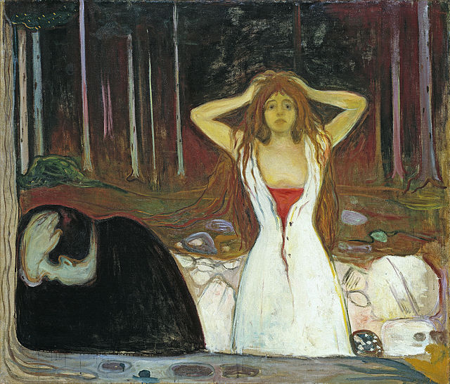

Edvard Munch
OBRAS

Edvard Munch fue un pintor y artista gráfico noruego que a través de su obra logró representar los sentimientos del hombre, el alma y la sensación de ansiedad y angustia. Su obra, mayormente expresionista, es conocida por tener un trasfondo psicológico.
- Nacimiento: 12 de diciembre de 1863, Ådalsbruk, Noruega.
- Fallecimiento: 23 de enero de 1944, Oslo, Noruega.
“El Grito”

“Cenizas”
“Ansiedad”